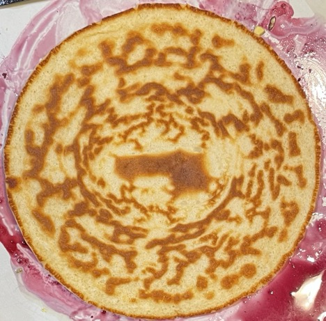

Semi-fluffy pancakes
Portions
- 2 pancakes
- 55g self-raising flour
- 83g milk
- 1 large egg
- 4 pancakes
- 110g self-raising flour
- 165g milk
- 2 large eggs
Chia-seed pancakes
- Soak for 1-2 hours before making pancakes
- ½-1 tbsp chia seeds
- 80g milk
Cooking
- Melt butter and spread over pan base with silicon spatula
- Pour in mix
- When cooked lift and flip just before top is cooked in middle
- Don’t move until cooked — only turn once
- Serve first cooked side up
Serving
- Maple, pistachio & blueberry pancakes
- Compote
Notes
Pics
